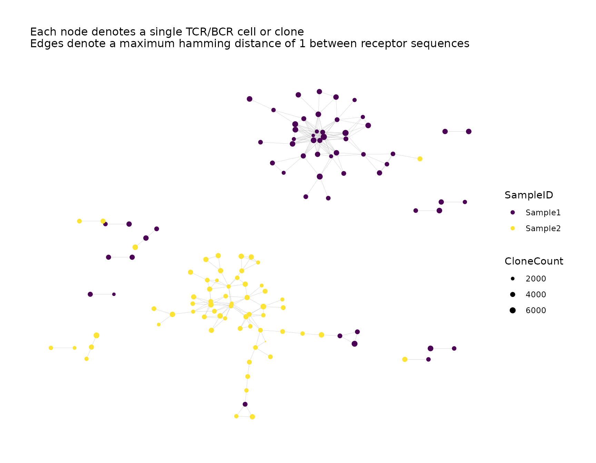
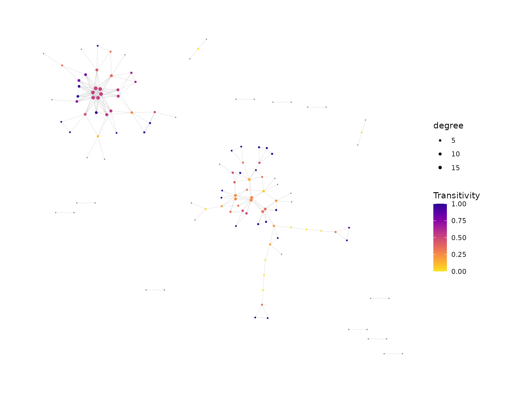
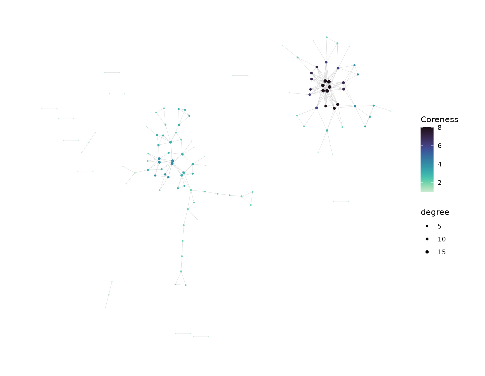

Introduction
General network analysis on Adaptive Immune Receptor Repertoire
Sequencing (AIRR-Seq) data is performed using
buildRepSeqNetwork() or its convenient alias
buildNet(). This function does the following:
- Filters the AIRR-Seq data according to user specifications
- Builds the network graph for the immune repertoire
- Performs additional network analysis, which can include:
- Cluster analysis
- Network properties
- Customizable visual plots of the network graph
- Returns (and optionally saves) the following output:
- The network graph (as
igraphand adjacency matrix) - Metadata for the network
- Metadata for the nodes in the network
- Metadata for the clusters in the network
- Plots of the network graph
- The network graph (as
Simulate Data for Demonstration
We simulate some toy data for demonstration.
We simulate data consisting of two samples with 100 observations each, for a total of 200 observations (rows).
set.seed(42)
library(NAIR)
#> Welcome to NAIR: Network Analysis of Immune Repertoire.
#> Get started using `vignette("NAIR")`, or by visiting
#> https://mlizhangx.github.io/Network-Analysis-for-Repertoire-Sequencing-/
dir_out <- tempdir()
toy_data <- simulateToyData()
head(toy_data)
#> CloneSeq CloneFrequency CloneCount SampleID
#> 1 TTGAGGAAATTCG 0.007873775 3095 Sample1
#> 2 GGAGATGAATCGG 0.007777102 3057 Sample1
#> 3 GTCGGGTAATTGG 0.009094910 3575 Sample1
#> 4 GCCGGGTAATTCG 0.010160859 3994 Sample1
#> 5 GAAAGAGAATTCG 0.009336593 3670 Sample1
#> 6 AGGTGGGAATTCG 0.010369470 4076 Sample1
nrow(toy_data)
#> [1] 200Required Arguments
- The first parameter
dataaccepts a data frame containing the AIRR-seq data, where each row corresponds to a single TCR/BCR clone (bulk data) or cell (single-cell data). - The second parameter
seq_colspecifies the data column containing the receptor sequences to be used as the basis of similarity between two cells or clones. It accepts the column name as a character string or the column position index.
net <- buildNet(toy_data, "CloneSeq")Filtering the Input Data
The following options are useful for removing noise or irrelevant data from the analysis, potentially improving the quality of the network graph and downstream analysis results.
Sequence Length
The min_seq_length parameter specifies the minimum
TCR/BCR sequence length (in number of characters). Sequences with
lengths below this value are dropped prior to analysis. An argument
value of NULL bypasses this filter. This filter applies to
the sequence in the column specified by seq_col.
By default, min_seq_length is set to 3.
net <- buildNet(toy_data, "CloneSeq", min_seq_length = 10)Sequence Content
The optional drop_matches parameter can be used to
remove TCR/BCR sequences matching a specified pattern. It accepts a
character string containing a regular expression specifying the pattern
of content to search for. Each sequence in the column specified by seq_col is checked for a pattern match
using grep(). If a match is found, the sequence is removed
prior to analysis.
net <- buildNet(toy_data, "CloneSeq", drop_matches = "\\W")Network Settings
The following settings pertain to the network construction.
Distance Function
The default method for quantifying the similarity between TCR/BCR
sequences is the Hamming distance, which is computed using
hamDistBounded(). It calculates the number of differences
between two sequences of the same length. For each position in one
sequence, the character in that position is checked to see whether it
differs from the character in the same position of the other sequence.
If the sequences have different lengths, the shorter sequence is
extended by adding non-matching characters to make it the same length as
the longer sequence.
The Levenshtein distance, which is computed using
levDistBounded(), can be used as an alternative measurement
to determine the similarity between sequences. It calculates the minimum
number of single-character edits (insertions, deletions and
transformations) needed to transform one sequence into the other. This
method is particularly useful for comparing sequences of different
lengths and can account for insertions and deletions. When constructing
a network based on the similarity of CDR-3 nucleotide sequences, it is
preferable to use the Levenshtein distance instead of the default
Hamming distance by specifying dist_type = "lev". However,
the Levenshtein distance requires significantly more computation than
the Hamming distance, which may be challenging when working with large
data sets having long TCR/BCR sequences.
net <- buildNet(toy_data, "CloneSeq", dist_type = "lev")Distance Cutoff
The function specified by dist_type quantifies the
similarity between TCR/BCR sequences as a nonnegative distance, with
values closer to 0 indicating greater similarity.
Each node in the network graph corresponds to a row of the AIRR-Seq
data. By default, two nodes are connected by an edge if the distance
between their TCR/BCR sequences does not exceed 1. This cutoff value is
specified by the dist_cutoff parameter, which controls the
stringency of the network construction and affects the number and
density of edges in the network. A lower cutoff requires greater
sequence similarity to form an edge connection. If
dist_cutoff = 0, two sequences must be identical in order
for their nodes to be joined by an edge.
net <- buildNet(toy_data, "CloneSeq", dist_cutoff = 0)Keep/Remove Isolated Nodes
By default, only nodes that are joined by an edge connection to at least one other node will be kept in the network.
If drop_isolated_nodes = FALSE, then all nodes are kept
in the network, including those that do not have any edge connections to
other nodes.
net <- buildNet(toy_data, "CloneSeq", drop_isolated_nodes = FALSE)Network Properties and Cluster Analysis
buildRepSeqNetwork() can perform additional analysis
after constructing the network, including cluster analysis (partitioning
the network graph into densely-connected subgraphs) and computation of
network properties (which describe the structural organization of the
network).
Node-Level Network Properties
Node-level network properties pertain to individual nodes in the network graph.
Some are local properties, meaning that their value for a given node depends only on a subset of the nodes in the network. One example is the network degree of a given node, which represents the number of other nodes that are directly joined to the given node by an edge connection.
Other properties are global properties, meaning that their value for a given node depends on all of the nodes in the network. An example is the authority score of a node, which is computed using the entire graph adjacency matrix (if we denote this matrix by \(A\), then the principal eigenvector of \(A^T A\) represents the authority scores of the network nodes).
Node-level network properties can be computed when calling
buildRepSeqNetwork() by setting
node_stats = TRUE, or as a separate step using
addNodeStats().
net <- buildNet(toy_data, "CloneSeq", node_stats = TRUE)See this vignette for more details on computing node-level network properties.
Cluster Analysis
Cluster analysis uses a community-finding algorithm to partition the network graph into clusters (densely-connected subgraphs). These clusters represent groups of clones/cells with similar receptor sequences.
Cluster analysis can be performed when calling
buildRepSeqNetwork() by setting
cluster_stats = TRUE or as a separate step using
addClusterStats().
net <- buildNet(toy_data, "CloneSeq", cluster_stats = TRUE)The cluster membership of each node is recorded as a variable in the node metadata. Cluster properties, such as node count and mean sequence length, are included in their own data frame within the output.
See this vignette for more details.
Visualization
Customized plots can be produced when calling
buildRepSeqNetwork() or created afterward using
addPlots().
Specify print_plots = TRUE to print the plots to the R
plotting window.
net <- buildNet(toy_data, "CloneSeq",
node_stats = TRUE,
color_nodes_by = c("SampleID", "transitivity", "coreness"),
color_scheme = c("default", "plasma-1", "mako-1"),
color_title = c("", "Transitivity", "Coreness"),
size_nodes_by = "degree",
node_size_limits = c(0.1, 1.5),
plot_title = NULL,
plot_subtitle = NULL,
print_plots = TRUE
)
See this article for more on how to customize the visualizations.
Output
The function returns a list with the following elements:
names(net)
#> [1] "details" "igraph" "adjacency_matrix" "node_data"
#> [5] "plots"We describe each element below.
Network Metadata
details records argument values supplied in the call to
buildRepSeqNetwork():
net$details
#> $seq_col
#> [1] "CloneSeq"
#>
#> $dist_type
#> [1] "hamming"
#>
#> $dist_cutoff
#> [1] 1
#>
#> $drop_isolated_nodes
#> [1] TRUE
#>
#> $nodes_in_network
#> [1] 122
#>
#> $min_seq_length
#> [1] 3
#>
#> $drop_matches
#> [1] "NULL"nodes_in_network records the number of nodes in the
network. Additional network information is included when cluster analysis is performed.
Node Metadata
node_data is a data frame containing metadata for the
network nodes, where each row corresponds to a node in the network
graph:
head(net$node_data)
#> CloneSeq CloneFrequency CloneCount SampleID degree transitivity
#> 2 GGAGATGAATCGG 0.007777102 3057 Sample1 1 NaN
#> 5 GAAAGAGAATTCG 0.009336593 3670 Sample1 3 0.3333333
#> 8 GGGGAGAAATTGG 0.006220155 2445 Sample1 2 1.0000000
#> 11 GGGGGAGAATTGC 0.012969469 5098 Sample1 4 0.6666667
#> 12 GGGGGGGAATTGC 0.009079646 3569 Sample1 10 0.3555556
#> 13 AGGGGGAAATTGG 0.014941093 5873 Sample1 5 0.1000000
#> eigen_centrality centrality_by_eigen betweenness centrality_by_betweenness
#> 2 0.00000000 0.000000e+00 0.000000 0.000000
#> 5 0.00000000 1.702099e-17 108.000000 108.000000
#> 8 0.04558649 4.558649e-02 0.000000 0.000000
#> 11 0.15055366 1.505537e-01 1.549451 1.549451
#> 12 0.52691798 5.269180e-01 73.970918 73.970918
#> 13 0.14682343 1.468234e-01 75.439560 75.439560
#> authority_score coreness page_rank
#> 2 0.00000000 1 0.008196721
#> 5 0.00000000 2 0.010578507
#> 8 0.04558649 2 0.003936684
#> 11 0.15055366 4 0.005034736
#> 12 0.52691798 6 0.011491588
#> 13 0.14682343 3 0.008703523Since buildNet() was called with drop_isolated_nodes = TRUE, some
of the original rows are missing. The original row names are preserved,
facilitating cross-referencing with the original data.
By default, all variables from the original input data are present.
To include only a subset of the original variables, specify those to
keep using the subset_cols parameter, which accepts a
character vector of column names or a vector of column indices. The
sequence column is always included.
Variables for node-level network properties will also be present if computed, as seen here.
Variables present in the node metadata can be used to encode node colors in visualizations.
Cluster Metadata
If buildRepSeqNetwork() is called with cluster_stats = TRUE, the
returned list will contain a data frame cluster_data with
cluster properties such as node count and mean sequence length, as seen
here.
Visual Plots
plots is a list containing any plots created as well as
a matrix graph_layout storing the node layout used in the
plots. Each plot is named according to the variable used to color the
nodes.
names(net$plots)
#> [1] "SampleID" "transitivity" "coreness" "graph_layout"Each plot is a ggraph (a
special kind of ggplot).
class(net$plots$uniform_color)
#> [1] "NULL"Custom plots can be created when calling buildNet() or
afterward using addPlots() as described here.
Network Graph and Adjacency Matrix
igraph is an object of class igraph and
adjacency_matrix is a dgCMatrix.
Both objects encode the nodes and edges of the network graph, each using
a different format. These objects are used by other NAIR
functions, and are typically not of direct importance to the user.
Saving Output
Output Directory
buildRepSeqNetwork() writes its output to files if a
directory path is provided to the output_dir parameter. The
specified output directory will be created if it does not already
exist.
Output File Format
- By default, the list returned by
buildRepSeqNetwork()is saved as a compressed RDS file. - If the file will be transferred across machines, the RData format is
preferred. It can be used by specifying
output_type = "rda". The list will be namednetin the R environment. - To use the results outside of R, specify
output_type = "individual". Each list element will be saved as a separate file using the following formats:-
.csvfornode_dataandcluster_data(usingwrite.csv(), withrow.names = FALSEforcluster_data) -
.mtxforadjacency_matrix -
.txtfordetails,igraphandplots$graph_layout -
.rda(RData) forplots
-
- Regardless of
output_type, plots are printed to a pdf file containing one plot per page. The dimensions (in inches) for each page can be adjusted using theplot_widthandplot_heightparameters, with the defaults being12and10, respectively.
Output File Name(s)
By default, the name of each saved file begins with
MyRepSeqNetwork. This prefix can be changed using the
output_name parameter, which accepts a character
string.
When output_type is "rds" or
"rda", only two files are saved (the data file and the
pdf). For each file, output_name is followed by the
appropriate file extension. For example, if
output_name = "NetworkABC" and
output_type = "rds", then the files will be named
NetworkABC.rds and NetworkABC.pdf.
- If
output_type = "individual", the prefix specified byoutput_nameis followed by:-
_Details.txtfordetails -
_EdgeList.txtforigraph -
_AdjacencyMatrix.mtxforadjacency_matrix -
_NodeMetadata.csvfornode_data -
_ClusterMetadata.csvforcluster_data(if present) -
_Plots.rdafor the listplots -
.pdffor the pdf of the plots -
_GraphLayout.txtforplots$graph_layout
-
For example, if output_name = "NetworkABC" and
output_type = "individual", then the node metadata is saved
as NetworkABC_NodeMetadata.csv, the pdf is saved as
NetworkABC.pdf, the list plots is saved as
NetworkABC_Plots.rds, and so on.
Supplementary Functions
The NAIR package contains a number of functions
supplementary to buildRepSeqNetwork() that can be used to
perform additional downstream tasks. See this vignette.
library(magrittr) # For pipe operator (%>%)
toy_data %>%
filterInputData("CloneSeq", drop_matches = "\\W") %>%
buildNet("CloneSeq") %>%
addNodeStats("all") %>%
addClusterMembership("greedy", cluster_id_name = "cluster_greedy") %>%
addClusterMembership("leiden", cluster_id_name = "cluster_leiden") %>%
addClusterStats("cluster_leiden", "CloneSeq", "CloneCount") %>%
addPlots(color_nodes_by = c("cluster_leiden", "cluster_greedy"),
color_scheme = "Viridis"
) %>%
labelClusters("cluster_leiden", cluster_id_col = "cluster_leiden") %>%
labelClusters("cluster_greedy", cluster_id_col = "cluster_greedy") %>%
saveNetwork(output_dir = tempdir(), output_name = "my_network")